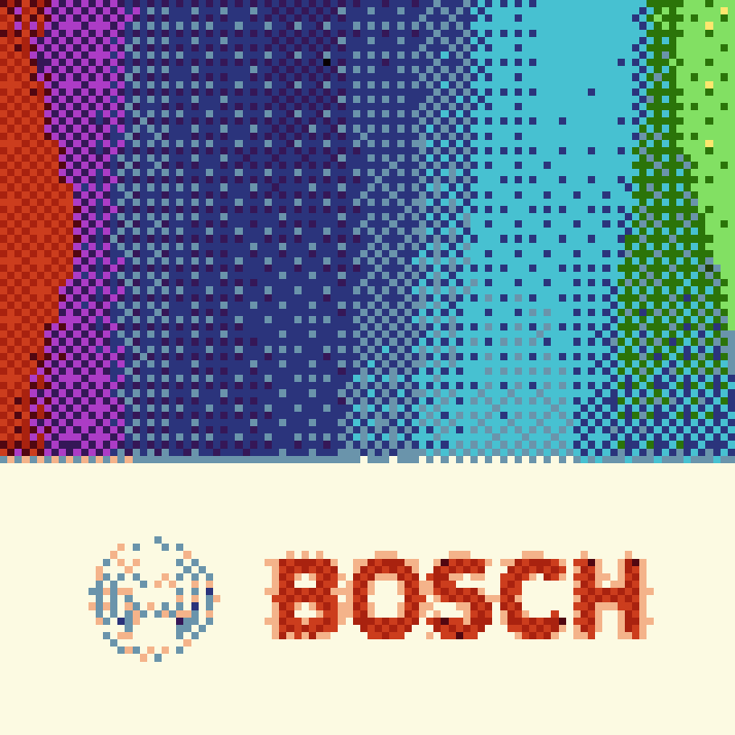
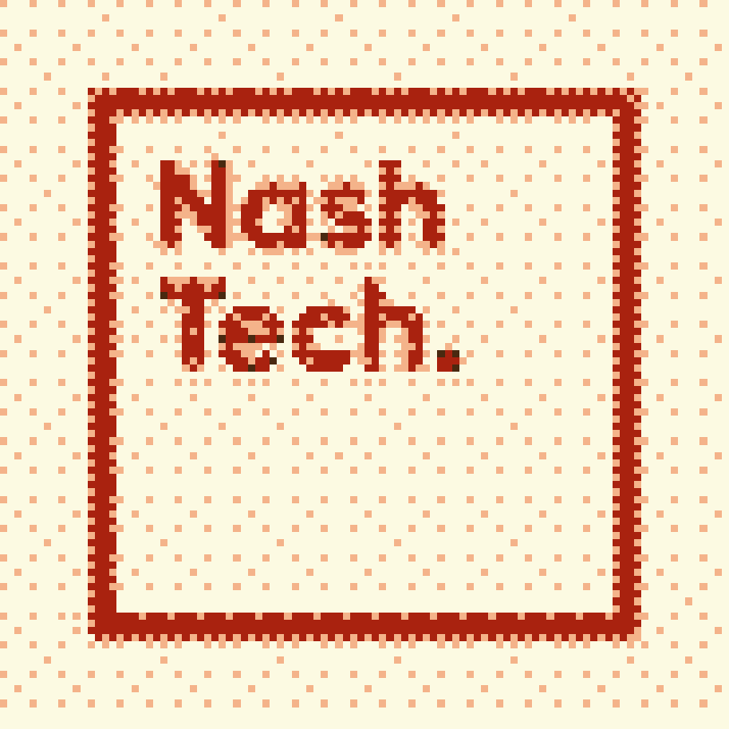
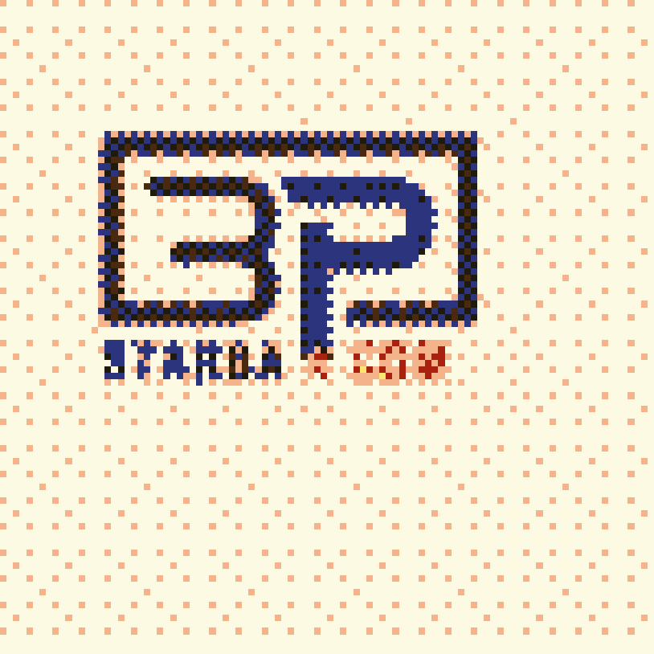

Senior Software Engineer
OPSWAT (Nov 2022 - Jun 2025)
MetaDefender Core
Advanced malware prevention and detection platform designed for integration into secure IT infrastructure via cross-platform APIs.
Key Contributions:
- Accessibility & Inclusion: Architected and implemented UI components to meet WCAG 2.1 standards, ensuring the security dashboard is accessible to all users.
- Quality Engineering: Spearheaded the transition to automated testing by introducing Playwright for End-to-End (E2E) testing, reducing manual QA cycles and increasing deployment confidence.
- Performance Optimization: Profiled web vitals to identify bottlenecks, resulting in minimized bundle sizes and significantly faster initial render times for the management console.

Senior Software Engineer
Bosch (Nov 2021 - Aug 2022)
Internal Budget Management Application
Full-stack development of a centralized financial platform for internal resource allocation and real-time budget tracking.
- State Management & Scalability: Engineered complex reactive features using RxJS and NgRx to ensure predictable state transitions and high performance across large financial datasets.
- Core Library Architecture: Contributed reusable UI components and utility services to the company-wide core library, reducing duplicate code and ensuring design consistency across departments.
- Full-Stack Feature Delivery: Developed and maintained end-to-end features using Angular 12 and Java/Spring Boot, prioritizing strict data validation and adherence to enterprise coding standards.
- Quality Assurance & Mentorship: Maintained high code quality through rigorous peer code reviews and expanded the automated testing suite using Cypress to ensure 100% reliability for critical budget calculations.

Software Engineer
Nashtech (Jan 2021 - Aug 2021)
Finantix ODC (Financial Solutions Division)
Offshore development for a global FinTech leader, delivering bespoke digital banking and wealth management solutions for international financial institutions.
- Data-Driven Visualization: Architected complex financial dashboards and interactive reporting modules using Highcharts and Ag-Grid, enabling users to visualize and manage large-scale investment datasets.
- Modular Development: Partnered with Technical Leads to decompose high-level business requirements into scalable Angular 9 modules and reusable TypeScript functions, ensuring strict adherence to enterprise architecture.
- Global Collaboration: Orchestrated daily technical syncs and sprint reviews with Project Owners and QA teams across Italy and Singapore, facilitating seamless handovers and resolving cross-timezone integration blockers.
- Legacy System Modernization: Balanced the delivery of modern features with the maintenance of legacy codebases, utilizing Jasmine for unit testing to ensure stability and prevent regressions during system updates.
- UI/UX Optimization: Leveraged PrimeNG and Bootstrap 4 to build responsive, accessible financial interfaces that meet the professional standards of private banking clients.

Software Engineer
Starbap Technology Vietnam (Aug 2020 - Feb 2021)